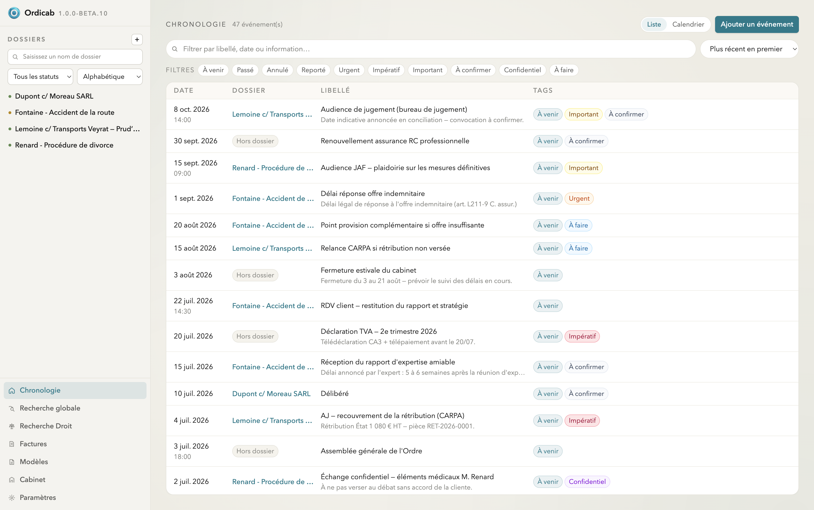
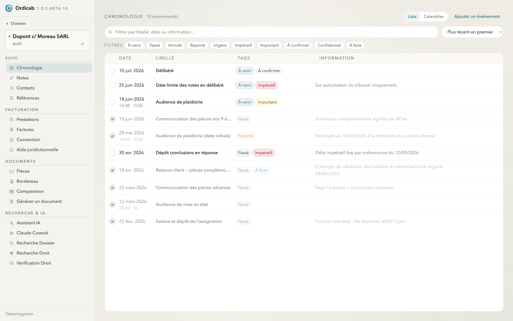

Agenda & chronologie
La chronologie est votre fil du temps. Au niveau du cabinet, elle agrège toutes les échéances — celles des dossiers et celles « hors dossier » (obligations ordinales, déclarations, formation…). Au niveau d'un dossier, elle ne montre que ses propres événements.
Vue liste ou calendrier
Basculez entre une liste chronologique et un calendrier (semaine ouvrée, semaine, mois). La liste affiche pour chaque événement sa date, son libellé, ses tags et une information complémentaire.

Chronologie du cabinet — agenda agrégé des échéances, ici les événements « hors dossier »
Filtres et priorités
Filtrez par état (À venir Passé Annulé Reporté) et par priorité (Urgent Impératif Important À confirmer Confidentiel À faire). Combinez les filtres pour ne garder, par exemple, que les échéances impératives à venir.
Événements de dossier
Dans un dossier, la chronologie liste audiences, assignations, délais de procédure, courriers et événements personnalisés. Chaque événement peut porter une date, une heure, des tags et une note.

Chronologie d'un dossier — événements datés, tags de priorité et informations